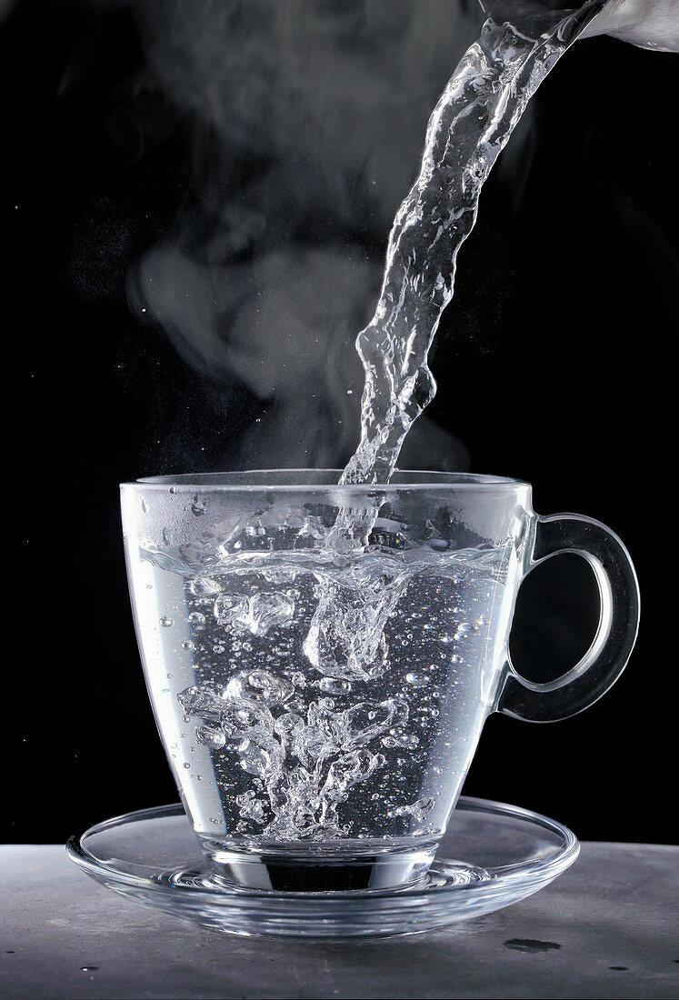

Boiled_Water

Description
Boiled water is a clean bacteria free version of normal water.
It is best served luke warm to avoid burning of the tongue, lips and oesophagus.
Ingredients
- Tap water
- tap water
- tap water
Steps
- Fetch cooking pot for holding the water.
- PLace cooking pot under tap.
- Gently open tap to let water into the pot.
- Close tap once cooking pot is three quarters full.
- PLace cooking pot on stove and turn the stove on to medium heat.
- Wait for the water to boil for at least one minute.
- Once water has boiled, serve it in a heat ressistant tumbler.
Return_to_Top
Return_Home